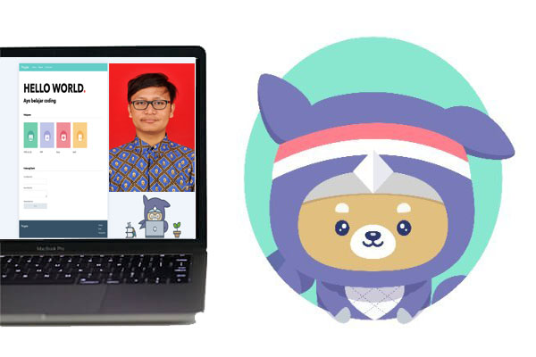

PORTOFOLIO DIGITAL
Saya seorang profesional IT yang berfokus pada pengembangan web, dukungan teknis, dan infrastruktur jaringan. Berikut beberapa karya dan pengalaman saya.
Jelajahi proyekAPA YANG SAYA KERJAKAN
Teknologi web yang saya gunakan untuk membangun pengalaman digital yang fungsional.
HTML adalah sebuah bahasa markup yang digunakan untuk membuat halaman website, agar dapat menghasilkan tampilan yang terstruktur dengan baik
CSS merupakan aturan terhadap beberapa komponen dalam halaman website yang dituliskan agar konten dapat ditampilkan dengan lebih estetis, dinamis, dan seragam
JavaScript adalah sebuah bahasa pemrograman tingkat tinggi dan dinamis yang disisipkan untuk menyempurnakan sistem dari sebuah halaman website
Web Application Programmer
Saya senang terus belajar, mengembangkan kemampuan, dan berbagi pengalaman di bidang teknologi informasi.
GitHub
Landing page sederhana yang dibangun dengan HTML dan CSS sebagai penerapan dasar pengembangan web.
Akses Halaman Lihat di GitHubAplikasi kalkulator interaktif berbasis JavaScript dengan perhitungan dasar dan antarmuka yang sederhana.
Akses Halaman Lihat di GitHubPENGALAMAN & PEMBELAJARAN
Pengalaman teknis dan pembelajaran berkelanjutan di bidang keamanan siber dan jaringan.
Pengembangan kemampuan keamanan siber dengan sertifikasi CCNA Cyber Ops.
Lihat sertifikatPengembangan kemampuan jaringan dengan sertifikasi CCNA Routing & Switching.
Lihat sertifikatEnam tahun pengalaman sebagai Desktop Support Engineer dan technical support.
Lihat sertifikat